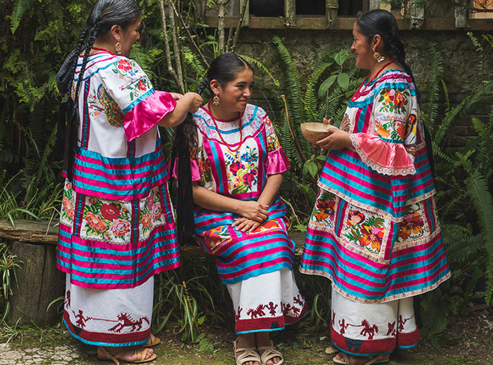
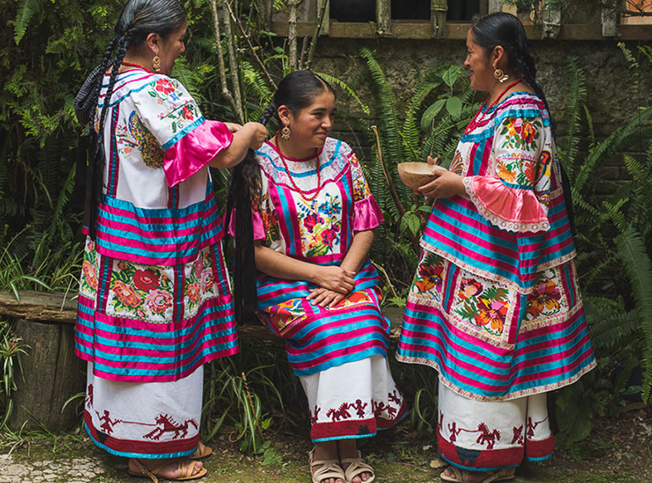
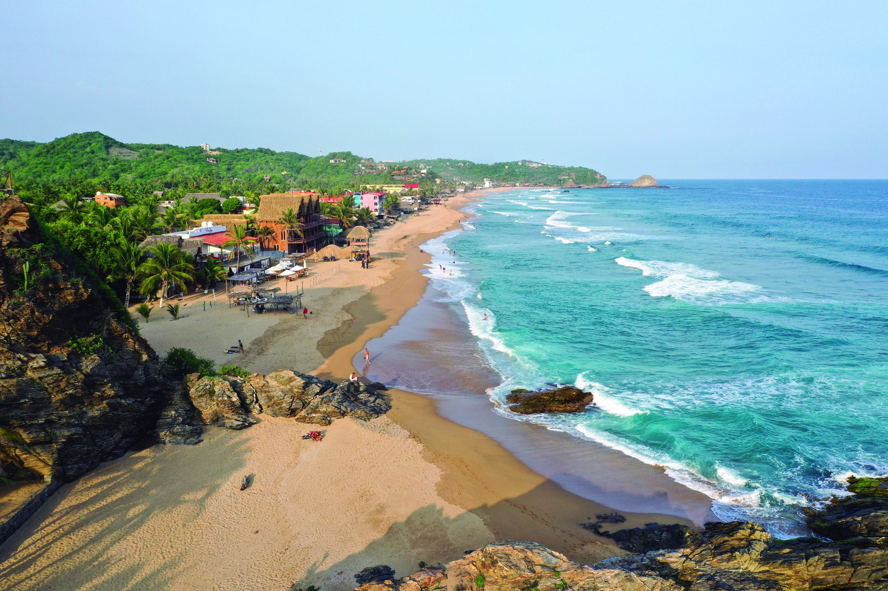
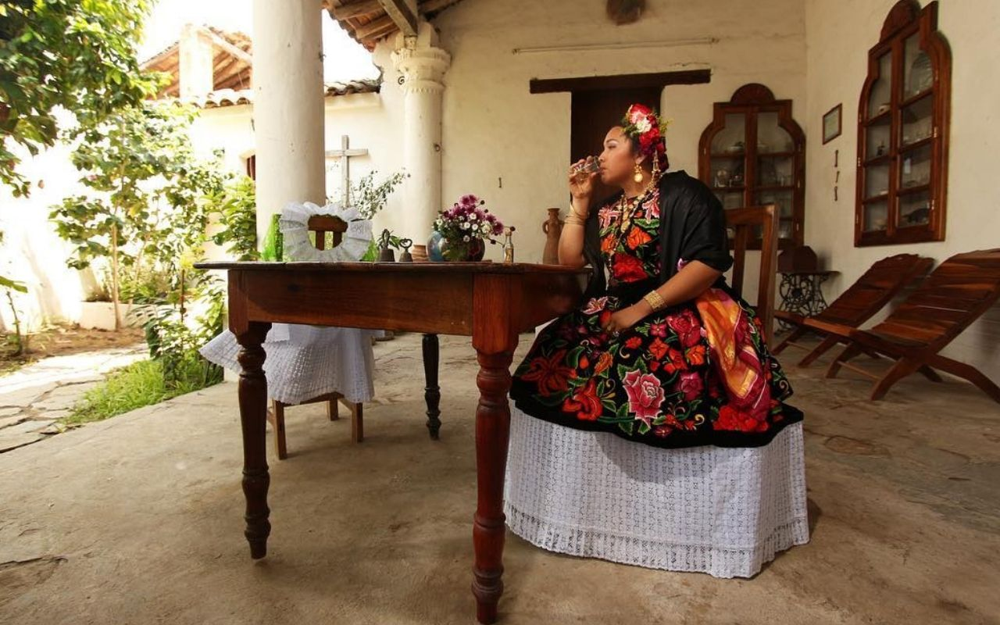
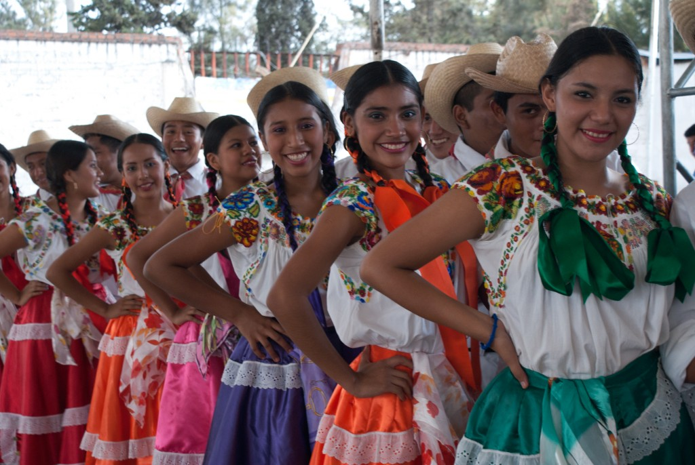
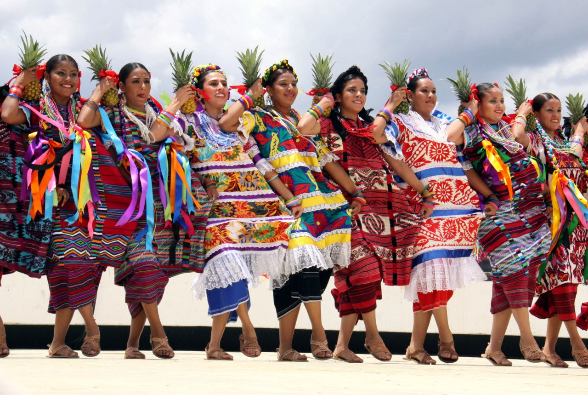
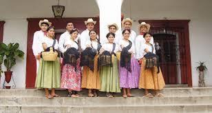
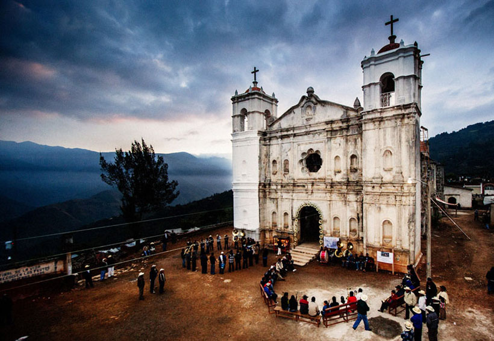
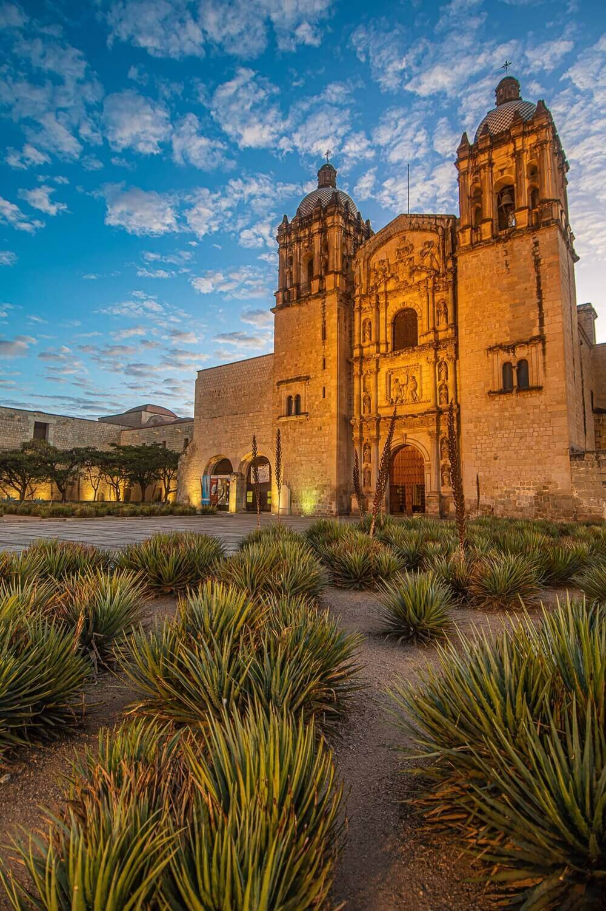

Región de la Cañada
La región de Cañada está ubicada en el noreste de Oaxaca y tiene un clima más fresco que otras partes del estado. Es el hogar de la ciudad de Huajuapan de León, conocida por su mercado tradicional y arquitectura colonial.
La región de Cañada está ubicada en el noreste de Oaxaca y tiene un clima más fresco que otras partes del estado. Es el hogar de la ciudad de Huajuapan de León, conocida por su mercado tradicional y arquitectura colonial.
La región de la Costa se encuentra a lo largo de la costa del Pacífico e incluye destinos turísticos populares como Puerto Escondido y Huatulco. Es conocida por sus hermosas playas y su gastronomía marinera.
La región del Istmo se encuentra en el sureste de Oaxaca y alberga la ciudad de Tehuantepec. Es conocido por su cultura indígena, incluida la vestimenta tradicional que usan las mujeres.
La región Mixteca se ubica en el occidente de Oaxaca y se caracteriza por su relieve montañoso. Alberga a la ciudad de Huajuapan de León y es conocida por su cultura indígena mixteca.
La región de Papaloapan está ubicada en el noreste de Oaxaca y recibe su nombre del río Papaloapan que la atraviesa. Es conocido por su producción agrícola y es el hogar de la ciudad de Tuxtepec.
La región Sierra Sur está ubicada al sur de Oaxaca y se caracteriza por su relieve montañoso. Es el hogar de la ciudad de Miahuatlán de Porfirio Díaz y es conocida por su producción de café.
La región Sierra Norte está ubicada en el norte de Oaxaca y se caracteriza por su relieve montañoso. Es conocido por sus oportunidades de ecoturismo, que incluyen caminatas y observación de aves.
La región de los Valles Centrales está ubicada en el centro de Oaxaca e incluye la ciudad de Oaxaca de Juárez. Es conocido por su arquitectura colonial, artesanía y cocina tradicional.
